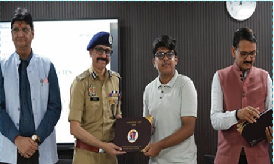
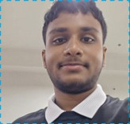
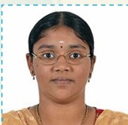

-
BHARATH KRISHNAM (RA2311028010016) of III B.Tech CSE w/s cloud computing
completed 10 weeks cloud virtual internship during April–June 2025 from AWS academy.
-
SAUMIL TIWARI (RA2311030010246), 5th Semester Cyber Security, successfully
completed a 30-day Internship Program at Uttar Pradesh State Institute of Forensic Science
(UPSIFS), Lucknow, from 09 June 2025 to 08 July 2025, gaining hands-on training across
various domains of Forensic Science, Science & Technology, and Law.

-
RAMESH CHETTIAR (RA2411030010263), 3rd Semester Cyber Security,
participated in the two day HackSky Hackathon organized by Kaspersky at Manipal Institute
of Technology, Bengaluru from 29th July 2025 to 31st July 2025.
-
VELMATHY MUTHUSAMY (RA2511032010005), 1st Semester B.Tech CSE (IoT),
participated in the Seval Thirunal Competition held at SRMIST, Kattankulathur on
18th August 2025.
-
VENKATESHWARAN G M GURUMOORTHI (RA2411030010084), 3rd Semester
Cyber Security, successfully completed the Google Cybersecurity Professional Certificate
(Virtual, 90 days) from 29th May 2025 to 24th August 2025.


-
ANISH MALL (RA2411030010288), 3rd Semester, B.Tech Computer Science
Engineering with specialization in Cyber Security, participated in HackSky’25 held at
Manipal Institute of Technology, Bengaluru, from 29th July 2025 to 30th July 2025, and
received a Certificate of Participation.
-
Aarushi Seal (RA2511032010002), 1st semester B.Tech CSE with specialization
in IoT, participated in Pixels to Purpose held at Faraday Hall, SRMIST KTR on 19-08-2025.
-
Viswajith Pilli (RA2511030010108), 1st semester B.Tech CSE with specialization
in Cyber Security, participated in Hack and Beyond held at BEL Block, SRM KTR on
13-08-2025.
-
Viswajith Pilli (RA2511030010108), 1st semester B.Tech CSE with specialization
in Cyber Security, participated in INNOTECH 2025 – SDG Solve-A-Thon (Online) on
21-08-2025.
-
Srivathsan S (RA2511030010082), 1st semester B.Tech CSE with specialization
in Cyber Security, participated in Hack and Beyond held at BEL Block, SRMIST on
13-08-2025.
-
Srivathsan S (RA2511030010082), 1st semester B.Tech CSE with specialization
in Cyber Security, participated in INNOTECH 2025 – SDG Solve-A-Thon (Online) on
21-08-2025.